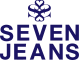
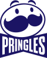
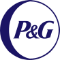
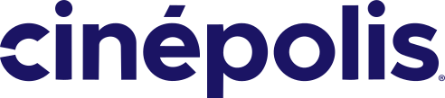
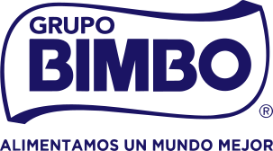

Veo el proyecto completo
Conecto marca, contenido, producto y experiencia para evitar soluciones aisladas.
Trabajo entre estrategia y diseño para construir marcas, productos y experiencias digitales. Puedo entrar desde la definición de una idea y acompañarla hasta su implementación.
Proyectos de marca, producto, cultura y diseño digital.
Mi experiencia cruza estrategia, diseño y producción. Eso me permite entender cómo una decisión afecta al resto del proyecto y diseñar pensando desde el inicio en dónde, cómo y para quién va a funcionar.
Conecto marca, contenido, producto y experiencia para evitar soluciones aisladas.
Trabajo con objetivos, información y restricciones para definirlas necesidades reales.
Integro marketing, negocio, contenido, desarrollo y producción para construir soluciones más completas.
Considero producción, implementación, handoff y evolución desde el inicio.
Mis cinco indispensables para un proyecto que vive más allá de la pantalla.
Conocer el contexto, las personas, el negocio y las restricciones.
Identificar qué problema vale la pena resolver y qué debe conseguir el proyecto.
Explorar, probar y convertir una dirección en un sistema concreto.
Llevar la solución a los formatos y puntos de contacto donde tiene que vivir.
Observar el resultado, aprender y ajustar lo necesario.
Soy Ángel Apolinar. Tengo más de diez años de experiencia en identidad, comunicación, producto y experiencias digitales para marcas de distintas industrias.
He trabajado en agencia, medios y equipos internos, desde la conceptualización hasta producción e implementación. Esa trayectoria me enseñó a moverme entre disciplinas, entender restricciones y trabajar con equipos muy distintos.
Me interesan especialmente los proyectos donde el diseño ayuda a entender, acceder, elegir o participar mejor: cultura, educación, servicios, información y productos con una utilidad clara.
También he trabajado en comunicación, contenido y producción para marcas y organizaciones de diferentes industrias.






Estoy disponible para proyectos y oportunidades en estrategia de marca, diseño y experiencias digitales.